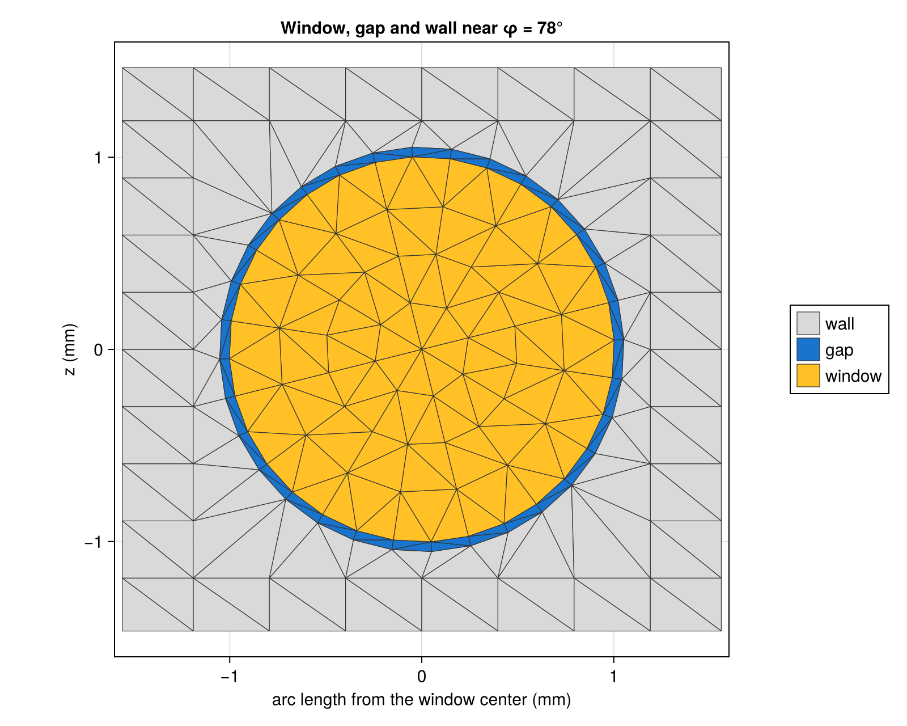
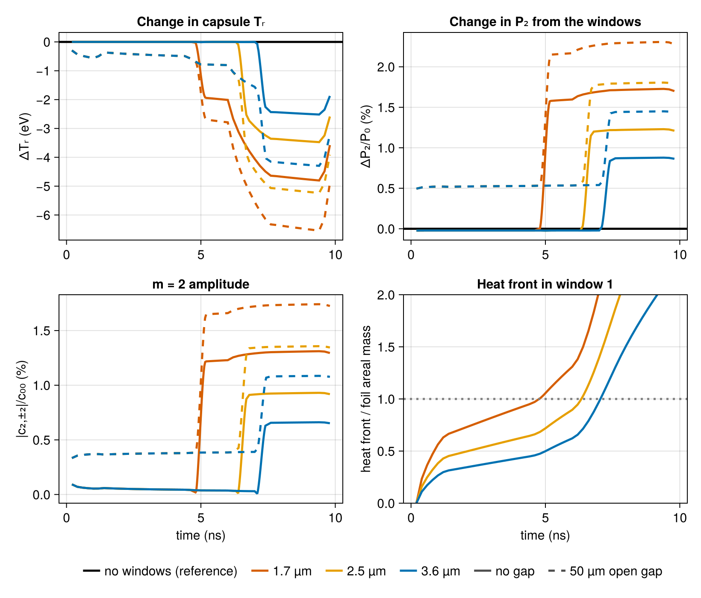
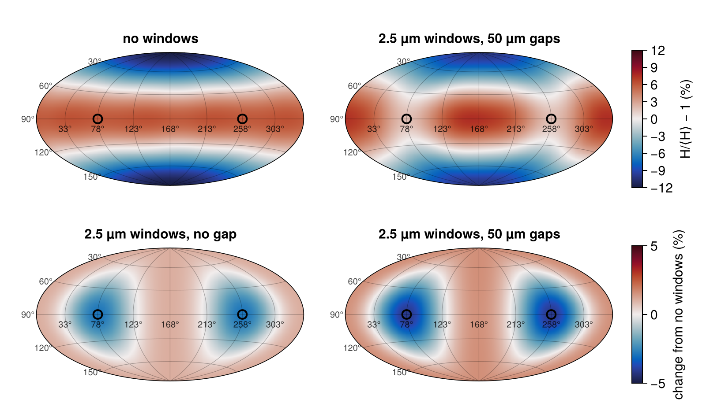
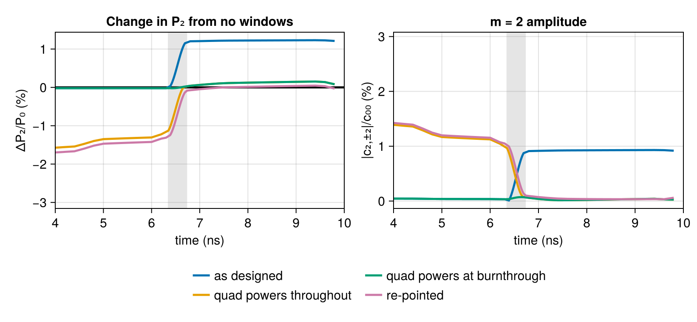

Diagnostic windows in the hohlraum wall
To see the capsule from the side during the implosion, a diagnostic needs a line of sight through the hohlraum wall. A hole would lose too much drive, so the wall carries a thin-foil window instead: a disk of gold about 2 mm across and a couple of micrometres thick, backed by a low-Z material that x rays above a few keV pass through. Early in the pulse the thin gold re-emits like the rest of the wall. The Marshak heat front that carries the x rays into the wall eats through it during the drive, and from then on part of the radiation that reaches the window passes through it and leaves: the waist of the capsule loses drive, and the poles, relatively, gain it. Two windows facing each other on the waist give a positive $P_2$ and an $m = 2$ asymmetry, and they cost drive. Assembly leaves a thin annular gap around each window that leaks from the start.
This tutorial meshes circular windows with their gaps into the wall, checks the heat-front model that decides when a window burns through against published solutions and measurements, and then follows a pair of windows through a NIF-like drive for three window thicknesses, with and without a gap. It then lets the transmission follow the drive and the gaps close, and restores the drive the windows take, with quad powers or quad pointing. It introduces WallWindow disks and gaps, the BurnthroughAlbedo thin-foil model with its HeatFront and its transmission after burnthrough, GapClosure, the window accounting of drive_history and energy_balance, and a Scenario linearized about a solution.
using Briareus
using CairoMakie
using Printf
CairoMakie.activate!(type = "png", px_per_unit = 2)
include(joinpath(pkgdir(Briareus), "docs", "literate", "_plotting.jl")) # figure helpers
set_theme!(fontsize = 15, linewidth = 2.5)A circular window on the wall
A WallWindow with a diameter is a disk drawn on the unrolled wall: arc length $s = R\phi$ along the wall by $z$ along the axis. Unrolling a cylinder is an isometry, so the window's area is $\pi d^2/4$. A gap adds a ring of that width around it, its own component (here the default, an open aperture).
hohlraum cuts a square box around the window and its gap out of the conforming wall grid, half a wall cell wider than the gap, and re-meshes it with triangles: polar rings inside the window, one band of triangles across the gap, and a band joining the gap's outer edge to the vertices the box shares with the grid around it, so the mesh has no T-junctions. Every vertex lies on the cylinder. A triangle with its vertices on the cylinder has a curved area of exactly $R$ times its area in $(\phi, z)$; the radiation model already uses that exact area (see the Integrating sphere tutorial for why curved areas matter). The window's edge is a regular polygon whose radius is enlarged to equal_area_radius, so the polygon's area is exactly that of the disk. The window and the gap therefore have exact areas, while their edges stay within a few micrometres of the circles.
d, gap = 2.0, 0.05
pair = [WallWindow(phi = φ, diameter = d, gap = gap) for φ in (78, 258)]
target = hohlraum(length = 10.1, radius = 2.875, leh_radius = 1.55, capsule_radius = 0.9,
windows = pair)
area(name) = sum(target.elem_area[elements(target, name)])
exact = (window = π * d^2 / 4, gap = π * ((d / 2 + gap)^2 - (d / 2)^2))
for (name, ref) in ((:window_1, exact.window), (:window_1_gap, exact.gap),
(:window_2, exact.window), (:window_2_gap, exact.gap))
@printf("%-14s %4d elements area %.12f mm² exact %.12f relative error %.1e\n", name,
length(elements(target, name)), area(name), ref, area(name) / ref - 1)
end
R, L = 2.875, 10.1
@printf("wall + windows + gaps: %.12f mm², 2πRL = %.12f\n",
area(:wall) + area(:window_1) + area(:window_1_gap) + area(:window_2) + area(:window_2_gap),
2π * R * L)window_1 112 elements area 3.141592653590 mm² exact 3.141592653590 relative error 2.2e-16
window_1_gap 64 elements area 0.322013246993 mm² exact 0.322013246993 relative error 3.1e-15
window_2 112 elements area 3.141592653590 mm² exact 3.141592653590 relative error -4.4e-16
window_2_gap 64 elements area 0.322013246993 mm² exact 0.322013246993 relative error 7.1e-15
wall + windows + gaps: 182.447993357227 mm², 2πRL = 182.447993357227The unrolled mesh around the first window. The box's outer vertices are the grid's own, the gap is one band of triangles 50 µm wide, and the window's elements are about the size of the wall's:
function unrolled(target, φc)
fig = Figure(size = (800, 640))
ax = Axis(fig[1, 1], aspect = DataAspect(), xlabel = "arc length from the window center (mm)",
ylabel = "z (mm)", title = "Window, gap and wall near φ = $(φc)°")
colors = Dict(:wall => (:gray85, "wall"), :window_1 => (:goldenrod1, "window"),
:window_1_gap => (:dodgerblue3, "gap"))
uv(p) = Point2f(R * (mod(atan(p[2], p[1]) - deg2rad(φc) + π, 2π) - π), p[3])
for k in eachindex(target.tri_area)
name = target.components[target.tri_comp[k]].name
haskey(colors, name) || continue
v = target.tri_v0[k]
pts = uv.((v, v + target.tri_e1[k], v + target.tri_e2[k]))
all(p -> abs(p[1]) < 1.6 && abs(p[2]) < 1.6, pts) || continue
poly!(ax, collect(pts); color = colors[name][1], strokecolor = :gray20, strokewidth = 0.6)
end
limits!(ax, -1.6, 1.6, -1.6, 1.6)
Legend(fig[1, 2], [PolyElement(color = c, strokecolor = :gray20, strokewidth = 0.6)
for (c, _) in values(colors)], [l for (_, l) in values(colors)])
return fig
end
unrolled(target, 78)
When a thin gold foil burns through
Radiation of temperature $T$ drives a subsonic, ablative heat front into a gold wall. Hammer and Rosen solved this Marshak wave self-similarly with power-law fits to gold's opacity and equation of state (Phys. Plasmas 10, 1829, 2003). At constant $T$ the areal mass behind the front is
\[m_F = 9.51\times10^{-4}\,\left(\frac{T}{100\ \mathrm{eV}}\right)^{1.914} \left(\frac{t}{1\ \mathrm{ns}}\right)^{0.5156}\ \mathrm{g/cm^2}\]
(their eq. 112 for a constant drive), the default HeatFront. A window burns through when $m_F$ reaches its own areal mass, $19.3\ \mathrm{g/cm^3}$ times its thickness, 3.86 mg/cm² for 2 µm. A hohlraum's temperature is far from constant, so the front is integrated over the drive history:
\[m_F(t) = c\left[\int_0^t \left(\frac{T(t')}{100\ \mathrm{eV}}\right)^{a/b} dt'\right]^b , \qquad c = 9.51\times10^{-4},\ a = 1.914,\ b = 0.5156 .\]
This depends only on the drive history and is exact at constant $T$. For a ramp $T = T_0 t^k$ it gives $m_F = c\,(1 + ka/b)^{-b}\,T(t)^a t^b$. The exact self-similar solutions for ramps are independent references for it.
heat_front integrates the drive by the trapezoidal rule. At constant temperature on an uneven grid it reproduces the closed form:
front = HeatFront()
(; coefficient, temperature_exponent, time_exponent) = front
ts = [0.0, 0.05, 0.3, 0.31, 1.0, 2.2, 4.0]
m = heat_front(front, ts, fill(300.0, length(ts)))
@printf("constant 300 eV: largest relative error %.1e\n",
maximum(abs.(m[2:end] ./ (coefficient * 3.0^temperature_exponent .* ts[2:end] .^ time_exponent) .- 1)))constant 300 eV: largest relative error 2.2e-16For ramps, compare with two exact solutions:
- Hammer and Rosen give $9.51\times10^{-4}$ at constant temperature and $7.13\times10^{-4}$ for $T \propto t^{0.182}$ (their eq. 112, $q_0 = 1$).
- Shussman and Heizler's exact solution of the same problem (Phys. Plasmas 22, 082109, 2015, eqs. 35–36) gives $10.17\times10^{-4}$ at constant temperature and $8.32\times10^{-4}$ at constant absorbed flux, $T \propto t^{0.123}$.
The two solutions differ by 7% at constant temperature, so the test is the ratio of each ramp to its own constant-temperature coefficient. Hammer and Rosen also plot the ablated mass at 4 ns for $T_s = (t/1\,\mathrm{ns})^{0.182}$ hectovolts: about 2.2–2.4 mg/cm² from both HYDRA and the analytic curve (their Fig. 4b).
ramp_mass(k, T0, t) = heat_front(front, range(0, t; length = 40001),
T0 .* range(0, t; length = 40001) .^ k)[end]
for (k, exact_ratio, source) in ((0.182, 7.13 / 9.51, "Hammer & Rosen"),
(0.123, 8.32 / 10.17, "Shussman & Heizler"))
ratio = ramp_mass(k, 100.0, 1.0) / ramp_mass(0.0, 100.0, 1.0)
@printf("T ∝ t^%.3f: m(k)/m(0) = %.4f, exact %.4f (%s): %+.1f%%\n", k, ratio, exact_ratio,
source, 100 * (ratio / exact_ratio - 1))
end
@printf("ablated mass at 4 ns, T = t^0.182 heV: %.2f mg/cm² (HYDRA and analytic: 2.2–2.4)\n",
1e3 * ramp_mass(0.182, 100.0, 4.0))T ∝ t^0.182: m(k)/m(0) = 0.7663, exact 0.7497 (Hammer & Rosen): +2.2%
T ∝ t^0.123: m(k)/m(0) = 0.8237, exact 0.8181 (Shussman & Heizler): +0.7%
ablated mass at 4 ns, T = t^0.182 heV: 2.41 mg/cm² (HYDRA and analytic: 2.2–2.4)The integrated front is 2.2% too heavy for Hammer and Rosen's ramp and 0.7% for Shussman and Heizler's. The residual has a known cause: the shape of the self-similar profile depends on the drive history, which a single integral of the temperature cannot carry. Two percent in mass is four percent in burnthrough time.
Against measured burnthrough
The Nova experiments measured burnthrough of gold foils of 0.8–3 µm on the wall of a hohlraum near 260 eV. In those experiments the radiation temperature rose as about $t^{0.15}$ under a flat laser pulse (Lindl et al., Phys. Plasmas 11, 339, 2004, Fig. 4-6, which compares the data with a heat-front curve for that drive). The times below are the half-signal times read from that figure, to about ±0.03 ns. burnthrough_time gives the heat front's arrival for the same drive, and BurnthroughAlbedo starts its transition there, reaching half transmission width/2 (0.2 ns by default) later:
nova = [(0.77, 0.33), (1.07, 0.565), (1.55, 0.78), (1.93, 0.86), (2.05, 1.03), (2.27, 1.14),
(3.0, 1.52)]
tn = range(0, 2.5; length = 2501)
Tnova = 260 .* tn .^ 0.15
println(" Au (µm) measured (ns) front arrival + width/2 constant 260 eV")
offsets = Float64[]
for (x, measured) in nova
model = BurnthroughAlbedo(thickness = x)
tb = burnthrough_time(model, tn, Tnova)
push!(offsets, measured - tb)
@printf(" %5.2f %5.2f %5.2f %5.2f %5.2f\n", x, measured, tb,
tb + model.width / 2, burnthrough_time(model, [0.0, 2.5], [260.0, 260.0]))
end
@printf("measured − front arrival: %.2f ns on average (%.2f–%.2f)\n",
sum(offsets) / length(offsets), extrema(offsets)...) Au (µm) measured (ns) front arrival + width/2 constant 260 eV
0.77 0.33 0.24 0.44 0.07
1.07 0.56 0.36 0.56 0.13
1.55 0.78 0.57 0.77 0.27
1.93 0.86 0.75 0.95 0.41
2.05 1.03 0.80 1.00 0.46
2.27 1.14 0.91 1.11 0.56
3.00 1.52 1.29 1.49 0.96
measured − front arrival: 0.19 ns on average (0.09–0.23)The front tracks the data's thickness dependence: about 0.8 ns from 0.8 to 2.3 µm, and 1.2 ns out to 3 µm. The measured half signal comes 0.1–0.25 ns after the front arrives, and the default transition width puts half transmission there. A constant-temperature estimate would burn the foils through three times too early.
Before the front arrives, the foil absorbs exactly what a thick wall does: in the diffusion picture the cold gold ahead of a nonlinear front does not change the flux into it, and the measurements show no early transmission. So the thin-foil albedo follows the wall's own Marshak scaling, WallLossAlbedo, until burnthrough.
After burnthrough
A burned-through foil does not vanish. It is hot, held in place by its backing, and still optically thick. A gray, planar foil of optical depth $\tau$ in the Eddington approximation with a Marshak boundary condition transmits
\[\frac{F_\mathrm{trans}}{F_\mathrm{inc}} = \frac{4/3}{\tau + 2/3} = \frac{4}{3\tau + 2}\]
of the flux on it (R. S. Lester et al., Phys. Rev. E 114, L023201, 2026, eq. 2; eddington_transmission). Their eq. 1 sets $\tau = L/\lambda_\mathrm{Au}(T_h)$, with $\lambda_\mathrm{Au}$ the Rosseland mean free path of gold at the hohlraum's radiation temperature, and gives $\tau \sim 5$ for $L = 2.5$ µm (gold at an assumed density of about 1 g/cm³, $T_h$ typically 300–350 eV). BurnthroughAlbedo keeps that mean free path and scales $\tau$ with the foil's areal mass (optical_depth). A fraction $\mathcal{T}$ of the flux on a burned-through window leaves the hohlraum. The rest meets the foil as before and is re-emitted with the wall's Marshak albedo, so across the transition the albedo falls smoothly from $\alpha_\mathrm{before}$ to $(1 - \mathcal{T})\,\alpha_\mathrm{before}$. For the windows below:
for x in (1.7, 2.5, 3.6)
model = BurnthroughAlbedo(thickness = x)
@printf("%.1f µm: τ = %.1f, transmission %.3f\n", x, optical_depth(model),
model.transmission)
end1.7 µm: τ = 3.4, transmission 0.328
2.5 µm: τ = 5.0, transmission 0.235
3.6 µm: τ = 7.2, transmission 0.169This is a gray estimate with the mean free path held at one temperature. The limit it replaces, after = 0, makes a burned-through window an open hole: everything that reaches it leaves, an upper bound on the loss.
Gold's Rosseland mean free path grows with temperature. Hammer and Rosen's power-law fit to its opacity, $1/K = g\,T^{1.5}\rho^{-0.2}$ with $g = 1/7200$ g/cm² and $T$ in hectovolts (their eq. 31, fitted over 100–200 eV), puts the as-built areal mass of a 2.5 µm foil, at the expanded density of 1 g/cm³ that Lester et al. assume, at $\tau = 5.9$ for 325 eV: within 20% of their $\tau \sim 5$, from independent physics. transmission = RosselandTransmission() keeps their point at 325 eV, the middle of their 300–350 eV, and scales $\tau$ as $T^{-1.5}$ with the radiation temperature of the flux on the foil (foil_transmission):
@printf("Hammer & Rosen, 2.5 µm at 1 g/cm³ and 325 eV: τ = %.2f\n", 19.3 * 2.5e-4 * 7200 * 3.25^-1.5)
println(" Au (µm) transmission at 250, 300, 325, 350 eV")
for x in (1.7, 2.5, 3.6)
model = BurnthroughAlbedo(thickness = x, transmission = RosselandTransmission())
@printf(" %.1f %s\n", x, join((@sprintf("%.3f", foil_transmission(model, T))
for T in (250, 300, 325, 350)), " "))
endHammer & Rosen, 2.5 µm at 1 g/cm³ and 325 eV: τ = 5.93
Au (µm) transmission at 250, 300, 325, 350 eV
1.7 0.234 0.296 0.328 0.359
2.5 0.165 0.211 0.235 0.259
3.6 0.118 0.152 0.169 0.188A foil that burns through while the hohlraum is cooler than 325 eV transmits less than the constant estimate, and one in a hotter hohlraum more.
A pair of windows in a NIF-like hohlraum
The hohlraum of the Freeing a bundle for radiography tutorial (10.1 × 5.75 mm, 3.1 mm entrance holes, a 0.9 mm capsule) has a gold wall with the Marshak albedo of WallLossAlbedo and a laser-to-x-ray conversion of 0.8. Its 48 quads are pointed as there. Each quad follows a pulse with a picket, a long foot, a second step and a 2 ns peak at 9.5 TW per quad (456 TW, 1.6 MJ in all). Two windows 2 mm across sit at the waist at φ = 78° and 258°, a pair related by the 180° rotation about the axis, which the NIF ports share; their foils are 1.7, 2.5 or 3.6 µm of gold. The mesh is coarser than the default to keep the tutorial quick.
wall = Material(:Au; albedo = WallLossAlbedo(), conversion = 0.8)
resolution = (; nz = 24, nphi = 32, capsule_ntheta = 12, capsule_nphi = 24)
build(windows) = hohlraum(; length = 10.1, radius = 2.875, leh_radius = 1.55,
capsule_radius = 0.9, wall, windows, resolution...)
foil(thickness; kw...) = Material(:Au; albedo = BurnthroughAlbedo(; thickness, kw...), conversion = 0.8)
windows(thickness; gap = 0.0, kw...) =
[WallWindow(; phi, diameter = 2.0, gap, material = foil(thickness; kw...)) for phi in (78, 258)]
pointing = Dict(:outer50 => (0.0, 5.01), :outer44 => (0.0, 5.20),
:inner30 => (0.60, 3.63), :inner23 => (1.09, 3.09))
function aimed(b)
r, z = pointing[b.group]
φ = port_angles(b)[2]
return remake(b; aim = (-r * cosd(φ), -r * sind(φ), sign(b.port[3]) * z))
end
quads = aimed.(nif_quads())
pulse = PulseShape([0.0, 0.3, 1.0, 1.4, 4.5, 5.0, 6.0, 7.5, 9.5, 10.0],
[0.0, 1.2, 1.2, 0.3, 0.3, 1.0, 1.0, 9.5, 9.5, 0.0])
@printf("laser energy %.2f MJ, peak power %.0f TW\n", 48 * pulse_energy(pulse) / 1e3, 48 * 9.5)laser energy 1.58 MJ, peak power 456 TWdrive_history marches the radiosity through the pulse quasi-statically. Each window element tracks its own heat front from its own incident flux, so the windows burn through when the flux on them says they should. With ylm = true it also records the real spherical harmonics of the capsule flux. The three thicknesses share one geometry, so they share its view factors and its deposition operator.
The steps are 0.2 ns, but a window's albedo falls to $(1 - \mathcal{T})\,\alpha_\mathrm{before}$ over the 0.4 ns width of its transition, which two steps would jump across. With transition = 0.05 the march inserts steps wherever an element's transition would advance by more than a twentieth of the way in one step, planned from each element's known or predicted burnthrough time. It returns the times it took in time.
The open-hole bound and the linearized scenarios below are standalone solves, which evaluate the wall's WallLossAlbedo at the time since the pulse start. The histories do the same here (wall_history = false), so that every comparison is like with like; by default a drive history follows each wall element's own temperature history instead, which lowers the wall albedo early in the peak.
times = 0.2:0.2:9.8
beams_at(τ) = with_pulses(quads, pulse, τ)
history(model, op, times) = drive_history(model, op, beams_at, times; lmax = 6, ylm = true,
transition = 0.05, wall_history = false)
runs = Dict{Tuple{Float64,Float64},Any}()
shared = Dict{Float64,Any}() # view factors and operator per gap
for g in (0.0, 0.05), thickness in (1.7, 2.5, 3.6)
t = build(windows(thickness; gap = g))
if !haskey(shared, g)
shared[g] = (RadiationModel(t; closed = true).F, DepositionOperator(t, quads))
end
F, op = shared[g]
runs[(thickness, g)] = history(RadiationModel(t; F), op, times)
end
@printf("steps: %d given, %d–%d taken\n", length(times),
extrema(length(h.time) for h in values(runs))...)steps: 49 given, 67–71 takenThe hohlraum without windows is the reference. It is solved at every time any of the windowed runs took, so the differences below compare like with like.
base_target = build(())
base_model, base_op = RadiationModel(base_target; closed = true), DepositionOperator(base_target, quads)
rebase(hs) = history(base_model, base_op, sort(unique(reduce(vcat, [h.time for h in hs]))))
base = rebase(values(runs))
@printf("reference steps: %d\n", length(base.time))reference steps: 168The change in the capsule's radiation temperature and in $P_2$ from the hohlraum without windows, the $m = 2$ amplitude $\sqrt{c_{22}^2 + c_{2,-2}^2}/c_{00}$ of the capsule flux, and each window's heat front as a fraction of its foil. Without windows the capsule's radiation temperature peaks at the value printed below:
on(h, x) = x[indexin(h.time, base.time)] # base values at the times of run h
P2(h) = h.moments[3, :] ./ h.moments[1, :]
P4(h) = h.moments[5, :] ./ h.moments[1, :]
m2(h) = hypot.(h.ylm[mode_index(2, 2), :], h.ylm[mode_index(2, -2), :]) ./ h.ylm[1, :]
palette = Makie.wong_colors()
colors = Dict(1.7 => palette[6], 2.5 => palette[2], 3.6 => palette[1])
fig = Figure(size = (820, 700))
axT = Axis(fig[1, 1], ylabel = "ΔTᵣ (eV)", title = "Change in capsule Tᵣ")
axP = Axis(fig[1, 2], ylabel = "ΔP₂/P₀ (%)", title = "Change in P₂ from the windows")
axM = Axis(fig[2, 1], xlabel = "time (ns)", ylabel = "|c₂,±₂|/c₀₀ (%)", title = "m = 2 amplitude")
axF = Axis(fig[2, 2], xlabel = "time (ns)", ylabel = "heat front / foil areal mass",
title = "Heat front in window 1")
hlines!(axT, [0.0], color = :black)
hlines!(axP, [0.0], color = :black)
for thickness in (1.7, 2.5, 3.6), g in (0.0, 0.05)
h = runs[(thickness, g)]
kw = (; color = colors[thickness], linestyle = g == 0 ? :solid : :dash)
lines!(axT, h.time, h.Tr .- on(h, base.Tr); kw...)
lines!(axP, h.time, 100 .* (P2(h) .- on(h, P2(base))); kw...)
lines!(axM, h.time, 100 .* m2(h); kw...)
g == 0 && lines!(axF, h.time, h.front[:window_1]; kw...)
end
hlines!(axF, [1.0], color = :gray50, linestyle = :dot)
ylims!(axF, 0, 2)
Legend(fig[3, 1:2],
[[LineElement(color = :black)];
[LineElement(color = colors[x]) for x in (1.7, 2.5, 3.6)];
[LineElement(color = :gray30), LineElement(color = :gray30, linestyle = :dash)]],
["no windows (reference)", "1.7 µm", "2.5 µm", "3.6 µm", "no gap", "50 µm open gap"],
orientation = :horizontal, framevisible = false, nbanks = 1)
@printf("capsule Tᵣ without windows: %.0f eV at the peak\n", maximum(base.Tr))
fig
Without a gap the windows cost nothing until they burn through: an intact window re-emits like the wall, and its $\Delta P_2$ and $m = 2$ stay below 0.05%, the size of the remeshing. Then the waist goes cold. Thinner foils burn through earlier (1.7 µm during the second step of the pulse, 2.5 µm on the rise, and 3.6 µm just before the peak) and transmit more. At the peak, $P_2$ is up by 0.9–1.7%, the $m = 2$ amplitude reaches 0.7–1.3%, and the capsule's radiation temperature is down by 2.5–4.7 eV, from 3.6 µm to 1.7 µm. An open 50 µm gap leaks from the start. Before burnthrough the gaps alone give about 0.5% of $P_2$, 0.4% of $m = 2$ and 1.3 eV; at the peak they add 0.58% and 1.7–1.8 eV to the windows' cost.
A capsule's shape integrates the drive asymmetry over the pulse. The table therefore gives the change in $P_2$, $P_4$ and $m = 2$ weighted by the capsule flux from 5 ns on, as well as at the peak. It also gives the drive cost: the radiation temperature at the peak, the capsule's absorbed energy over the pulse, and the energy that leaves through the windows and gaps (window_loss). Each history is summed over its own steps, each step weighted by half the time to its neighbors (the first and last by a whole step), which on the uniform times is the plain sum times the step.
function weights(τ)
w = [(τ[min(k + 1, end)] - τ[max(k - 1, 1)]) / 2 for k in eachindex(τ)]
w[1] *= 2
w[end] *= 2
return w
end
integral(h, x) = sum(weights(h.time) .* x)
function flux_weighted(h, x; from = 5.0)
w = weights(h.time) .* (h.time .>= from) .* h.moments[1, :]
return sum(w .* x) / sum(w)
end
function peak_mean(h, x)
w = weights(h.time) .* (7.6 .<= h.time .<= 9.4)
return sum(w .* x) / sum(w)
end
println(" Au gap burnthrough ΔTᵣ peak capsule energy window loss ΔP₂ ΔP₂ ΔP₄ m=2")
println(" (µm) (µm) (ns) (eV) (%) (kJ) peak weighted weighted weighted")
for g in (0.0, 0.05), thickness in (1.7, 2.5, 3.6)
h = runs[(thickness, g)]
tb = h.burnthrough[:window_1]
@printf(" %.1f %3.0f %5.2f %+6.1f %+6.1f %6.0f %+5.2f%% %+5.2f%% %+5.2f%% %4.2f%%\n",
thickness, 1e3g, sum(tb) / length(tb), peak_mean(h, h.Tr) - peak_mean(base, base.Tr),
100 * (integral(h, h.flux) / integral(base, base.flux) - 1), integral(h, h.window_loss),
100 * (peak_mean(h, P2(h)) - peak_mean(base, P2(base))),
100 * (flux_weighted(h, P2(h)) - flux_weighted(base, P2(base))),
100 * (flux_weighted(h, P4(h)) - flux_weighted(base, P4(base))),
100 * flux_weighted(h, m2(h)))
end Au gap burnthrough ΔTᵣ peak capsule energy window loss ΔP₂ ΔP₂ ΔP₄ m=2
(µm) (µm) (ns) (eV) (%) (kJ) peak weighted weighted weighted
1.7 0 4.77 -4.7 -5.4 58 +1.72% +1.71% -0.22% 1.30%
2.5 0 6.34 -3.4 -3.7 40 +1.22% +1.12% -0.14% 0.86%
3.6 0 7.05 -2.5 -2.3 24 +0.87% +0.68% -0.08% 0.52%
1.7 50 4.79 -6.4 -7.4 76 +2.30% +2.29% -0.28% 1.73%
2.5 50 6.35 -5.2 -5.8 58 +1.80% +1.69% -0.20% 1.28%
3.6 50 7.06 -4.2 -4.4 43 +1.45% +1.24% -0.14% 0.93%A thinner foil burns through earlier and transmits more, so the thin foils cost the most. The flux-weighted $\Delta P_2$ rises from 0.7% for 3.6 µm to 1.7% for 1.7 µm (1.2–2.3% with the gaps), and the capsule loses 2.3–5.4% of its energy (4.4–7.4% with the gaps).
The open hole bounds these losses from above. At the peak every window has burned through, so the albedos no longer depend on when each element did: a solve at each peak step with after = 0 and every window element burned through gives the open-hole history there exactly. It reuses the view factors and the deposition operator of the runs above.
peak_times = filter(τ -> 7.6 <= τ <= 9.4, collect(times))
at_peak(h, x) = (w = weights(peak_times); sum(w .* x[indexin(peak_times, h.time)]) / sum(w))
function open_hole(g)
hole = Material(:Au; albedo = BurnthroughAlbedo(thickness = 2.5, after = 0), conversion = 0.8)
t = build([WallWindow(; phi, diameter = 2.0, gap = g, material = hole) for phi in (78, 258)])
F, op = shared[g]
model = RadiationModel(t; F)
obs = elements(t, :capsule)
W = ylm_weights(t, obs; lmax = 6)
burned = zeros(nelements(t)) # burnthrough times: all at 0 ns
sols = [solve(model, deposit(op, beams_at(τ)); time = τ, burnthrough = burned)
for τ in peak_times]
moments = reduce(hcat, [legendre_moments(s.H, t, obs; lmax = 6) for s in sols])
return (; time = peak_times, moments, Tr = radiation_temperature.(moments[1, :]),
ylm = reduce(hcat, [W * s.H[obs] for s in sols]))
end
println(" peak, 7.6–9.4 ns gap ΔTᵣ ΔP₂ m=2")
println(" (µm) (eV)")
for g in (0.0, 0.05)
transmitting = [(@sprintf("transmission %.3f (%.1f µm)",
BurnthroughAlbedo(thickness = x).transmission, x), runs[(x, g)])
for x in (1.7, 2.5, 3.6)]
for (label, r) in [("open hole (after = 0)", open_hole(g)); transmitting]
@printf(" %-28s %3.0f %+5.1f %+5.2f%% %4.2f%%\n", label, 1e3g,
at_peak(r, r.Tr) - at_peak(base, base.Tr),
100 * (at_peak(r, P2(r)) - at_peak(base, P2(base))), 100 * at_peak(r, m2(r)))
end
end peak, 7.6–9.4 ns gap ΔTᵣ ΔP₂ m=2
(µm) (eV)
open hole (after = 0) 0 -13.6 +5.41% 4.13%
transmission 0.328 (1.7 µm) 0 -4.7 +1.72% 1.31%
transmission 0.235 (2.5 µm) 0 -3.4 +1.22% 0.93%
transmission 0.169 (3.6 µm) 0 -2.5 +0.87% 0.66%
open hole (after = 0) 50 -15.2 +6.03% 4.59%
transmission 0.328 (1.7 µm) 50 -6.4 +2.30% 1.74%
transmission 0.235 (2.5 µm) 50 -5.2 +1.80% 1.35%
transmission 0.169 (3.6 µm) 50 -4.2 +1.45% 1.08%At the peak the open hole costs three to six times as much as the transmitting foils: 13.6 eV of radiation temperature and 5.4% of $P_2$ without gaps. The gaps add about the same in either model, 0.58–0.62% of $P_2$ and 1.6–1.8 eV.
The pair of windows adds no odd-$m$ harmonics, because it shares the ports' 180° symmetry:
h = runs[(2.5, 0.05)]
odd = maximum(abs(h.ylm[mode_index(l, m), k]) / h.ylm[1, k]
for l in 1:4 for m in -l:l if isodd(m) for k in eachindex(h.time))
@printf("largest odd-m |c_lm|/c₀₀ over the pulse: %.1e\n", odd)largest odd-m |c_lm|/c₀₀ over the pulse: 3.0e-16The capsule flux at the end of the peak, as equal-area (Hammer) maps seen from outside, centered between the windows, which face the capsule's waist at φ = 78° and 258° (circles). The maps are drawn from the spherical harmonics through $l = 6$, which carry the low modes a capsule responds to, rather than from the coarse capsule mesh. The top row shows the flux relative to its own mean, without windows and with the 2.5 µm pair and its gaps. Without windows this untuned pointing already drives the waist hot, so the bottom row subtracts that map and shows what the windows change: on the left without gaps, on the right with them.
function ylm_field(c; lmax = 6)
C = ylm_matrix(c, lmax)
Y = zeros(lmax + 1, 2lmax + 1)
mean = c[1] / sqrt(4π) # c₀₀ Y₀₀
return (θ, φ) -> (Briareus._real_ylm!(Y, lmax, cosd(θ), deg2rad(φ)); 100 * (sum(C .* Y) / mean - 1))
end
φ0 = 168.0 # map center, between the windows
deviation_map(h) = sphere_map(ylm_field(h.ylm[:, findfirst(≈(9.4), h.time)]); φ0)
base_map = deviation_map(base)
change_map(h) = (m = deviation_map(h); (m[1], m[2], m[3] .- base_map[3]))
rows = (["no windows" => base_map, "2.5 µm windows, 50 µm gaps" => deviation_map(h)],
["2.5 µm windows, no gap" => change_map(runs[(2.5, 0.0)]),
"2.5 µm windows, 50 µm gaps" => change_map(h)])
limits = [ceil(maximum(maximum(abs, filter(isfinite, m[3])) for (_, m) in row)) for row in rows]
fig = Figure(size = (800, 470))
for (i, row) in enumerate(rows), (j, (title, m)) in enumerate(row)
ax = sphere_axis(fig[i, j]; title, φ0)
sphere_heatmap!(ax, m; colormap = :balance, colorrange = (-limits[i], limits[i]))
mark_directions!(ax, [(90, 78), (90, 258)]; φ0, marker = :circle, markersize = 14,
color = :transparent, strokecolor = :black, strokewidth = 2)
end
Colorbar(fig[1, 3]; colormap = :balance, colorrange = (-limits[1], limits[1]),
height = Relative(0.8), label = "H/⟨H⟩ − 1 (%)")
Colorbar(fig[2, 3]; colormap = :balance, colorrange = (-limits[2], limits[2]),
height = Relative(0.8), label = "change from no windows (%)")
rowgap!(fig.layout, 6)
fig
Without windows this untuned pointing drives the waist hot ($P_2/P_0 \approx -12\%$, which cone tuning would remove). With the windows open, the waist facing them cools to about the mean while the waist between them gains, relative to the mean, and the poles gain too. The waist's mean excess drops, which is the positive $\Delta P_2$, and the pattern $\cos 2(\phi - 78°)$ is the $m = 2$ asymmetry. The gaps add to it about half again.
The window energy balance
At any time, energy_balance splits a thin-foil window's loss $(1 - \alpha) H A$ into what it transmits, $s\mathcal{T} H A$ with $s$ the progress of its transition (0 intact, 1 burned through), and what it absorbs like the wall, $(1 - s\mathcal{T})(1 - \alpha_\mathrm{before}) H A$. The transmitted part with the open gap's escape is window_loss. At the end of the peak, for 2.5 µm windows with a 50 µm gap:
t = build(windows(2.5; gap = 0.05))
F, op = shared[0.05]
model = RadiationModel(t; F)
tb = fill(NaN, nelements(t))
for n in (:window_1, :window_2)
tb[elements(t, n)] .= h.burnthrough[n]
end
sol = solve(model, deposit(op, beams_at(9.4)); time = 9.4, burnthrough = tb)
bal = energy_balance(sol)
@printf("source %.1f TW: absorbed %.1f, entrance holes %.1f, windows transmit %.1f, gaps %.1f, lost %.1e\n",
bal.source, sum(values(bal.absorbed)), bal.escaped[:leh_top] + bal.escaped[:leh_bottom],
bal.transmitted[:window_1] + bal.transmitted[:window_2],
bal.escaped[:window_1_gap] + bal.escaped[:window_2_gap],
bal.source - sum(values(bal.absorbed)) - sum(values(bal.escaped)) - sum(values(bal.transmitted)))
@printf("window loss from the history at 9.4 ns: %.1f TW\n", h.window_loss[findfirst(≈(9.4), h.time)])
incident = sum(sol.H[e] * t.elem_area[e] for n in (:window_1, :window_2) for e in elements(t, n))
@printf("incident on the windows %.1f TW, transmitted fraction %.6f (transmission %.6f)\n",
incident, (bal.transmitted[:window_1] + bal.transmitted[:window_2]) / incident,
BurnthroughAlbedo(thickness = 2.5).transmission)source 363.6 TW: absorbed 193.6, entrance holes 150.5, windows transmit 13.6, gaps 5.9, lost 6.2e-13
window loss from the history at 9.4 ns: 19.6 TW
incident on the windows 57.9 TW, transmitted fraction 0.235294 (transmission 0.235294)The accounting closes to round-off, and the burned-through windows transmit the fraction $\mathcal{T}$ of the power on them.
A transmission that follows the drive
The same pairs of windows without gaps, with the transmission following the temperature of the flux on each window element, against the constant transmission above. Each history is compared with the hohlraum without windows solved at its own times, with the measures of the table above:
function costs(h, b)
on_b(x) = x[indexin(h.time, b.time)]
return (; burnthrough = sum(h.burnthrough[:window_1]) / length(h.burnthrough[:window_1]),
energy = 100 * (integral(h, h.flux) / integral(b, b.flux) - 1),
loss = integral(h, h.window_loss),
P2 = 100 * (flux_weighted(h, P2(h)) - flux_weighted(b, P2(b))),
m2 = 100 * flux_weighted(h, m2(h)), Tr = peak_mean(h, h.Tr) - peak_mean(h, on_b(b.Tr)))
end
F0, op0 = shared[0.0]
follows = Dict(x => history(RadiationModel(build(windows(x; transmission = RosselandTransmission())); F = F0),
op0, times) for x in (1.7, 2.5, 3.6))
base_follows = rebase([collect(values(follows)); [runs[(x, 0.0)] for x in (1.7, 2.5, 3.6)]])
println(" Au transmission burnthrough ΔTᵣ peak capsule energy window loss ΔP₂ weighted m=2 weighted")
println(" (µm) (ns) (eV) (%) (kJ)")
for x in (1.7, 2.5, 3.6), (label, h) in (("constant", runs[(x, 0.0)]), ("follows Tᵣ", follows[x]))
c = costs(h, base_follows)
@printf(" %.1f %-12s %5.2f %+5.1f %+5.1f %5.0f %+5.2f%% %4.2f%%\n",
x, label, c.burnthrough, c.Tr, c.energy, c.loss, c.P2, c.m2)
end
@printf("wall Tᵣ at burnthrough: %s eV; at the peak %.0f eV\n",
join((@sprintf("%.0f", runs[(x, 0.0)].wall_Tr[findfirst(≥(costs(runs[(x, 0.0)], base).burnthrough),
runs[(x, 0.0)].time)])
for x in (1.7, 2.5, 3.6)), ", "), peak_mean(base, base.wall_Tr)) Au transmission burnthrough ΔTᵣ peak capsule energy window loss ΔP₂ weighted m=2 weighted
(µm) (ns) (eV) (%) (kJ)
1.7 constant 4.77 -4.7 -5.4 58 +1.71% 1.30%
1.7 follows Tᵣ 4.77 -4.4 -4.8 51 +1.49% 1.13%
2.5 constant 6.34 -3.4 -3.7 40 +1.12% 0.86%
2.5 follows Tᵣ 6.34 -3.2 -3.3 36 +1.01% 0.77%
3.6 constant 7.05 -2.5 -2.3 24 +0.68% 0.52%
3.6 follows Tᵣ 7.05 -2.3 -2.1 22 +0.62% 0.48%
wall Tᵣ at burnthrough: 149, 227, 285 eV; at the peak 309 eVThese windows burn through while the wall is at 150–285 eV, and even at the peak it stays near 310 eV, below the 325 eV the constant transmission is pinned at. The transmission that follows the drive therefore loses about a tenth less: the 1.7 µm pair's flux-weighted $\Delta P_2$ drops from 1.71% to 1.49% and its capsule-energy cost from 5.4% to 4.8%, and the 3.6 µm pair's from 0.68% to 0.62% and 2.3% to 2.1%. The burnthrough times do not change: the transmission starts only once the front is through.
Gaps that close
The 50 µm gaps above stay open through the pulse, but plasma blown off their gold walls fills them. GapClosure makes a gap open (all the flux on it leaves) until a closure time and wall-like after it, across a 0.4 ns step; the closure time is an input this model does not compute. For the 2.5 µm pair with gaps closing at 3 ns (before the windows burn through) and at 7 ns (after):
closing_gap(tc) = Material(:Au; albedo = GapClosure(closure = tc), conversion = 0.8)
gapped(tc) = build([WallWindow(; phi, diameter = 2.0, gap = 0.05, gap_material = closing_gap(tc),
material = foil(2.5)) for phi in (78, 258)])
Fg = RadiationModel(gapped(3.0); closed = true).F # one geometry for both closures
opg = DepositionOperator(gapped(3.0), quads)
closes = Dict(tc => history(RadiationModel(gapped(tc); F = Fg), opg, times) for tc in (3.0, 7.0))
base_closes = rebase([collect(values(closes)); runs[(2.5, 0.0)]; runs[(2.5, 0.05)]])
println(" 2.5 µm windows ΔTᵣ peak capsule energy window loss ΔP₂ weighted m=2 weighted")
for (label, h) in (("no gap", runs[(2.5, 0.0)]), ("gap closing at 3 ns", closes[3.0]),
("gap closing at 7 ns", closes[7.0]), ("gap open throughout", runs[(2.5, 0.05)]))
c = costs(h, base_closes)
@printf(" %-20s %+5.1f %+5.1f %5.0f %+5.2f%% %4.2f%%\n",
label, c.Tr, c.energy, c.loss, c.P2, c.m2)
end 2.5 µm windows ΔTᵣ peak capsule energy window loss ΔP₂ weighted m=2 weighted
no gap -3.4 -3.7 40 +1.13% 0.86%
gap closing at 3 ns -3.4 -3.7 40 +1.14% 0.85%
gap closing at 7 ns -3.4 -4.1 44 +1.23% 0.92%
gap open throughout -5.2 -5.7 58 +1.70% 1.28%A gap that closes at 3 ns costs nothing measurable beyond the windows: it leaks only during the picket and the foot. Closing at 7 ns, after the windows have burned through but before the peak, it adds 0.4% of capsule energy and 0.10% of $P_2$, a fifth of what a gap open throughout adds (2.0% and 0.57%). How long a gap stays open thus matters more than its width, and the open-gap rows of the first table are the bound.
Restoring the drive around the windows
The windows take drive from the waist facing them: at the peak the 2.5 µm pair raises $P_2$ by 1.2% and adds an $m = 2$ of 0.9%. Cone pointing and power can restore $P_2$, but no cone setting can remove $m = 2$, which needs quads set apart. Two ways to set them: per-quad powers (NIF quads take their own pulse shapes), and per-quad pointing.
The optimizer needs a linear model of the capsule flux at the peak, with the windows burned through and the wall at its peak albedo. A Scenario with albedo set to a solution's converged albedos is exactly that: its flux response holds the albedos fixed, so it reproduces the solution it was taken from.
tpeak = 8.6
w25 = runs[(2.5, 0.0)]
twin = build(windows(2.5))
burned = fill(NaN, nelements(twin))
for n in (:window_1, :window_2)
burned[elements(twin, n)] .= w25.burnthrough[n]
end
win_model = RadiationModel(twin; F = F0)
sol_win = solve(win_model, deposit(op0, beams_at(tpeak)); time = tpeak, burnthrough = burned)
sol_base = solve(base_model, deposit(base_op, beams_at(tpeak)); time = tpeak)
peak = beams_at(tpeak)
quad_power = GroupPointing(peak; by = :quad, fields = (:power,))
S_win = Scenario(twin, peak; observe = :capsule, time = tpeak, albedo = sol_win.albedo,
parameterization = quad_power, viewfactor_kw = (; F = F0))
S_base = Scenario(base_target, peak; observe = :capsule, time = tpeak, albedo = sol_base.albedo,
parameterization = quad_power, viewfactor_kw = (; F = base_model.F))
x0 = initial_parameters(quad_power)
capsule = elements(twin, :capsule)
a = legendre_moments(sol_win.H, twin, capsule; lmax = 2)
@printf("P₂/P₀ at %.1f ns with windows: solve %+.6f%%, linearized scenario %+.6f%%\n", tpeak,
100 * a[3] / a[1], 100 * (b = flux_moments(evaluate(S_win, x0); lmax = 2); b[3] / b[1]))P₂/P₀ at 8.6 ns with windows: solve -10.861089%, linearized scenario -10.861089%The design without windows is the reference shape: the coefficients $c_{lm}/c_{00}$ of its capsule flux at the peak. asymmetry_objective with reference measures the departure from them for every $(l, m)$ through $l = 4$, and drive holds the mean flux at the reference's. Each quad's power may change by 20%:
ref = flux_ylm(evaluate(S_base, x0))
restore = asymmetry_objective(; modes = (1 => 1.0, 2 => 1.0, 3 => 1.0, 4 => 1.0), reference = ref,
drive = ref[1] / sqrt(4π))
lo, hi = bounds(quad_power, x0; power = 0.2)
trim = optimize_pointing(S_win, restore; x0, lower = lo, upper = hi, iterations = 300)
function departure(ev)
c = flux_ylm(ev; lmax = 4)
d = c ./ c[1] .- ref[1:length(c)] ./ ref[1]
return [100 * sqrt(sum(abs2, d[l^2+1:(l+1)^2])) for l in 1:4]
end
factors = trim.x ./ x0
@printf("%s after %d iterations; quad powers ×%.2f–%.2f (%d at a limit), total ×%.3f\n",
trim.reason, trim.iterations, extrema(factors)..., count(f -> abs(abs(f - 1) - 0.2) < 1e-6, factors),
sum(trim.x) / sum(x0))
for (label, ev) in (("as designed", evaluate(S_win, x0)), ("quad powers", evaluate(S_win, trim.x)))
@printf(" %-12s departure from the reference shape, l = 1–4: %s %%\n", label,
join((@sprintf("%.3f", d) for d in departure(ev)), ", "))
end
for g in (:inner23, :inner30, :outer44, :outer50)
f = factors[[b.group === g for b in peak]]
@printf(" %-8s quads ×%.3f on average (%.2f–%.2f)\n", g, sum(f) / length(f), extrema(f)...)
endconverged after 106 iterations; quad powers ×0.80–1.20 (32 at a limit), total ×1.039
as designed departure from the reference shape, l = 1–4: 0.001, 1.103, 0.003, 0.149 %
quad powers departure from the reference shape, l = 1–4: 0.001, 0.074, 0.013, 0.192 %
inner23 quads ×1.075 on average (0.87–1.20)
inner30 quads ×1.170 on average (1.08–1.20)
outer44 quads ×1.014 on average (0.80–1.20)
outer50 quads ×0.980 on average (0.80–1.20)The trim moves power to the inner cones, as the cold waist needs (the 30° cone by 17%), and spreads the quads within each cone over the whole ±20%. It brings the $l = 2$ departure from 1.10% to 0.07% and keeps $l = 1$ and $l = 3$ below 0.02%, but not $l = 4$, which stays near 0.15–0.19%: these windows' $l = 4$ pattern is out of reach of quad powers within the limits. Pointing can do the same: below, the quads are re-pointed at fixed power, up to 0.3 mm in $z$ and along the wall (phi). The windows and the NIF ports share the 180° rotation about the axis, so each quad moves with its partner across the axis, and the entrance-hole and capsule keep-outs hold.
partner(b) = (b.group, sign(b.port[3]), round(Int, mod(port_angles(b)[2], 180)))
pairs = GroupPointing(peak; by = partner, fields = (:z, :phi), mirror = false)
S_pairs = subset(S_win, eachindex(peak); parameterization = pairs)
xp = initial_parameters(pairs)
lo, hi = bounds(pairs, xp; z = 0.3, phi = 0.3)
shape_only = asymmetry_objective(; modes = (1 => 1.0, 2 => 1.0, 3 => 1.0, 4 => 1.0), reference = ref,
keepout = (ApertureKeepOut(twin), SphereKeepOut(twin)))
repoint = optimize_pointing(S_pairs, shape_only; x0 = xp, lower = lo, upper = hi, iterations = 200)
moves = reshape(repoint.x .- xp, 2, :)
@printf("%d quad pairs re-pointed: rms %.0f µm in z, %.0f µm along the wall (largest %.0f, %.0f)\n",
size(moves, 2), 1e3 * sqrt(sum(abs2, moves[1, :]) / size(moves, 2)),
1e3 * sqrt(sum(abs2, moves[2, :]) / size(moves, 2)), 1e3 .* maximum(abs, moves; dims = 2)...)
ev = evaluate(S_pairs, repoint.x)
@printf(" re-pointed departure from the reference shape, l = 1–4: %s %%; mean flux %+.1f%%\n",
join((@sprintf("%.3f", d) for d in departure(ev)), ", "), 100 * (flux_ylm(ev)[1] / ref[1] - 1))24 quad pairs re-pointed: rms 145 µm in z, 109 µm along the wall (largest 244, 197)
re-pointed departure from the reference shape, l = 1–4: 0.036, 0.037, 0.032, 0.173 %; mean flux -3.4%Moves of 0.11–0.15 mm rms (two to three times NIF's 50 µm rms pointing specification, the largest 0.29 mm) restore $l = 1$–$3$ to 0.02%, better than the powers, and leave the same $l = 4$; pointing alone cannot give back the 3.4% of drive the windows take.
Both settings were found at the peak, with the windows burned through. Before they burn through, the windows cost nothing, and a trim that is on throughout the pulse then makes the asymmetry it was meant to remove. NIF can set each quad's pulse shape, so the power trim can instead come on with the burnthrough, across the windows' 0.4 ns transition; pointing cannot change during the shot. The four designs through the pulse, against the hohlraum without windows:
tb_mean = sum(w25.burnthrough[:window_1]) / length(w25.burnthrough[:window_1])
switch(τ) = (x = clamp((τ - tb_mean) / 0.4, 0, 1); x^2 * (3 - 2x))
repointed = apply(pairs, repoint.x)
designs = ["as designed" => beams_at,
"quad powers throughout" => τ -> [remake(b; power = b.power * f)
for (b, f) in zip(beams_at(τ), factors)],
"quad powers at burnthrough" => τ -> [remake(b; power = b.power * (1 + switch(τ) * (f - 1)))
for (b, f) in zip(beams_at(τ), factors)],
"re-pointed" => τ -> with_pulses(repointed, pulse, τ)]
restored = Dict(label => drive_history(win_model, op0, f, times; lmax = 6, ylm = true, transition = 0.05,
wall_history = false)
for (label, f) in designs)
base_restored = rebase(values(restored))
fig = Figure(size = (820, 380))
axP = Axis(fig[1, 1], xlabel = "time (ns)", ylabel = "ΔP₂/P₀ (%)", title = "Change in P₂ from no windows")
axM = Axis(fig[1, 2], xlabel = "time (ns)", ylabel = "|c₂,±₂|/c₀₀ (%)", title = "m = 2 amplitude")
hlines!(axP, [0.0], color = :black)
vspan!(axP, tb_mean, tb_mean + 0.4, color = (:gray, 0.2))
vspan!(axM, tb_mean, tb_mean + 0.4, color = (:gray, 0.2))
for ((label, _), color) in zip(designs, palette)
h = restored[label]
lines!(axP, h.time, 100 .* (P2(h) .- P2(base_restored)[indexin(h.time, base_restored.time)]); color, label)
lines!(axM, h.time, 100 .* m2(h); color, label)
end
xlims!(axP, 4, 10); xlims!(axM, 4, 10)
Legend(fig[2, 1:2], axP, orientation = :horizontal, framevisible = false, nbanks = 2)
fig
span_mean(h, x, a, b) = (w = weights(h.time) .* (a .<= h.time .<= b); sum(w .* x) / sum(w))
println(" design laser ΔTᵣ ΔP₂ (%) m=2 (%)")
println(" energy peak before peak weighted before peak weighted")
for (label, f) in designs
h = restored[label]
c = costs(h, base_restored)
energy = integral(h, h.delivered) / integral(base_restored, base_restored.delivered) - 1
dP2 = 100 .* (P2(h) .- P2(base_restored)[indexin(h.time, base_restored.time)])
@printf(" %-26s %+5.1f%% %+5.1f %+5.2f %+5.2f %+5.2f %4.2f %4.2f %4.2f\n",
label, 100 * energy, c.Tr, span_mean(h, dP2, 5.0, tb_mean), peak_mean(h, dP2), c.P2,
100 * span_mean(h, m2(h), 5.0, tb_mean), 100 * peak_mean(h, m2(h)), c.m2)
end design laser ΔTᵣ ΔP₂ (%) m=2 (%)
energy peak before peak weighted before peak weighted
┌ Warning: Assignment to `h` in soft scope is ambiguous because a global variable by the same name exists: `h` will be treated as a new local. Disambiguate by using `local h` to suppress this warning or `global h` to assign to the existing global variable.
└ @ diagnostic_windows.md:793
as designed +0.0% -3.4 -0.02 +1.22 +1.13 0.04 0.93 0.86
quad powers throughout +3.9% +0.2 -1.31 +0.13 +0.02 1.13 0.03 0.10
quad powers at burnthrough +3.3% +0.2 -0.02 +0.13 +0.11 0.04 0.03 0.03
re-pointed +0.0% -2.7 -1.43 +0.03 -0.09 1.16 0.04 0.12("Before" is from 5 ns to the burnthrough.) The settings that act throughout overshoot before burnthrough: the trimmed powers and the re-pointed quads drive the waist the windows will cool while they are still intact, so $P_2$ falls by 1.3–1.5% and an $m = 2$ of 1.1–1.2% in the opposite phase appears until the windows open, which the flux-weighted averages largely hide. Switched on with the burnthrough, the trimmed powers keep $P_2$ and $m = 2$ at the no-window values before it (−0.02% and 0.04%) and hold $m = 2$ at 0.03% after it; the 0.13% of $P_2$ left at the peak is what the ±20% limits leave (the $l = 2$ departure above). The trims cost 3.3–3.9% more laser energy, the drive the windows take. The switch time comes from this model's heat front, so it inherits the front's uncertainty (about 0.2 ns against the Nova data, above).
What a gray view-factor model leaves out
The model gives the geometry of the loss exactly, but its physics after burnthrough is the gray estimate above. The foil is planar and steady. Its mean free path follows the temperature only through the opacity fit's $T^{1.5}$, at a density held at the assumed expansion, and the fit is extrapolated from 100–200 eV. The open hole, after = 0, bounds the loss from above. The heated backing absorbs part of what the gold transmits and radiates part back; here all of it is lost. A closing gap needs its closure time from elsewhere (a hydrodynamic estimate or a measurement). The restored designs are linear about the peak; they hold the no-window shape in the quasi-static histories, which use the full temperature-dependent albedos. The view-factor model also has no capsule hydrodynamics: it gives flux asymmetries, not the shape they imprint.
What this checks
- A circular window and its gap have the areas $\pi d^2/4$ and $\pi[(d/2 + g)^2 - (d/2)^2]$ to round-off. The equal-area edge polygon and the exact curved areas of triangles on the cylinder make them exact, and wall, windows and gaps tile the cylinder exactly.
- The integrated heat front reproduces the constant-temperature closed form to round-off. For ramps it agrees with the exact self-similar solutions of Hammer and Rosen to 2.2% and of Shussman and Heizler to 0.7%, and with Hammer and Rosen's simulated ablated mass. The cause of the residual is identified.
- Over 0.8–3 µm, the heat front and the transition width reproduce the measured burnthrough times of gold foils on a 260 eV hohlraum wall to within the scatter of the data. A constant-temperature estimate does not.
- The thin-foil energy accounting closes to round-off at a single time, the burned-through windows transmit the fraction $\mathcal{T} = 4/(3\tau + 2)$ of the power on them to round-off, and the accounting agrees with the window loss the drive history tracks.
- A pair of windows related by the 180° rotation about the axis adds no odd-$m$ harmonics.
- The temperature-following transmission equals the constant one at its 325 eV reference, and Hammer and Rosen's gold opacity fit puts the 2.5 µm foil at $\tau = 5.9$ there, within 20% of the $\tau \sim 5$ of Lester et al.
- A scenario linearized about the peak solution's albedos reproduces that solution's $P_2$ to round-off.
The test suite (test/windows.jl, test/burnthrough.jl) adds seven more checks. The view-factor rows of a windowed hohlraum close as well as those without windows. Reciprocity holds. Each window element's burnthrough time in the drive history matches the standalone estimate from that element's own temperature history. Once a window has burned through, the drive history sends exactly the fraction $\mathcal{T}$ of the power on it to transmitted. A history refined through the transitions follows a uniformly fine one five times more closely than the unrefined steps do. The temperature-following transmission of each burned-through element is the one for its own converged temperature. An open GapClosure gap matches the open (aperture) gap, a closed one the wall, and halfway closed it transmits half the power on it.
This page was generated using Literate.jl.